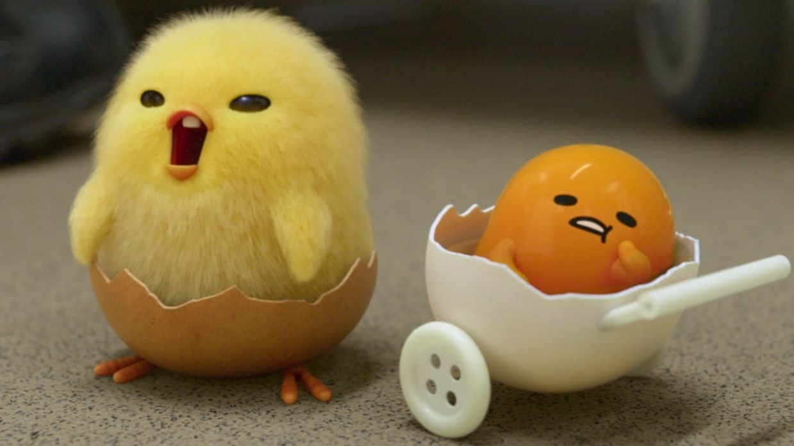

About Shakipiyo
Shakipiyo is a baby chicken in the Gudetama Universe. He was born in an egg carton, for he had somehow managed to fertilize. He is the main character of Gudetama: An Eggcellent Adventure, where he meets Gudetama and together they embark on a journey to find their mother.

Shakipiyo and Gudetama.
Shakipiyo's Characteristics
- Optimistic — Always hopeful and positive, even when Gudetama is lazy or pessimistic.
- Determined — Focused on the mission to find their mother, never giving up.
- Energetic — Full of life and constantly moving, in contrast to Gudetama’s lethargy.
- Caring — Protective of Gudetama, often dragging them along to keep the journey going.
- Naive — Innocent and sometimes gullible, which adds humor to the adventure.
- Brave — Faces challenges head-on, even when situations seem intimidating.
- Cheerful — Brings lightheartedness and joy to the story, balancing Gudetama’s gloom.